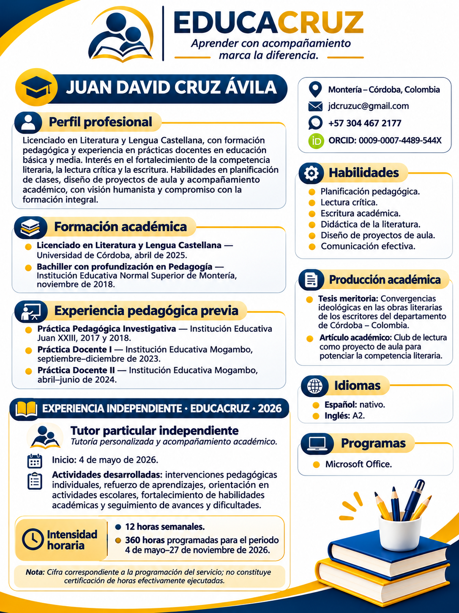

Tutoría personalizada
Espacios individuales para explicar, practicar y fortalecer los contenidos escolares.
EDUCACIÓN · ACOMPAÑAMIENTO · APRENDIZAJE
Un espacio de apoyo educativo para fortalecer los aprendizajes, desarrollar habilidades y avanzar con confianza.
CONÓCENOS
EDUCACRUZ ofrece tutorías personalizadas y acompañamiento académico, con atención a las necesidades y al proceso de aprendizaje de cada estudiante. Nuestro propósito es apoyar el desarrollo de competencias y promover una relación más consciente, autónoma y significativa con el conocimiento.
El servicio se desarrolla desde una perspectiva pedagógica, cercana y comprometida con la formación integral.

PERFIL PROFESIONAL
Licenciado en Literatura y Lengua Castellana, con formación pedagógica y experiencia en prácticas docentes en educación básica y media.
Interés en el fortalecimiento de la competencia literaria, la lectura crítica y la escritura como procesos formativos. Experiencia en planificación de clases, diseño de proyectos de aula y acompañamiento académico.
QUÉ HACEMOS
Apoyo académico organizado de acuerdo con las necesidades del estudiante.
Espacios individuales para explicar, practicar y fortalecer los contenidos escolares.
Seguimiento periódico al proceso escolar, hábitos de estudio y cumplimiento de actividades.
Orientación y apoyo en tareas, talleres, preparación de evaluaciones y actividades de aprendizaje.
INVERSIÓN EDUCATIVA
Valores expresados en pesos colombianos (COP).
$12.000/ 1 hora
2 horas: $17.000
3 horas: $22.000
Desde $80.000
Valor mínimo mensual del acompañamiento. El valor del servicio completo depende de la frecuencia y las sesiones programadas.
2 días por semana
8 sesiones mensuales de 2 horas: $136.000
3 días por semana
12 sesiones mensuales de 2 horas: $204.000
Los planes completos se calculan sobre cuatro semanas. El servicio a domicilio puede incluir un valor adicional de transporte según la zona. Consulta la tarifa aplicable antes de contratar.
RECURSOS PARA APRENDER
Guías, talleres y recursos descargables para apoyar el aprendizaje.
La biblioteca se irá ampliando con nuevos materiales. Los archivos disponibles se publicarán aquí para consulta y descarga gratuita.
NOVEDADES
En este espacio compartiremos nuevos materiales, avisos de servicio y novedades de EDUCACRUZ.
Publicaremos nuevos recursos educativos organizados por grado y área.
HABLEMOS
Comunícate para consultar disponibilidad, resolver inquietudes o conocer el servicio adecuado.